Exercises
3.1 Question 1
- find the marginal posterior of \(\alpha = \theta_1/(\theta_1+\theta_2)\) We need to find the joint posterior of \(\theta_1, \theta_2\) and then perform a change of variables to (\(\alpha,\beta)\). Let the prior \(p(\theta)=Diri(a_1,...,a_J)\) where y follows a multinomial likelihood. \[ \begin{aligned} p(\theta | y) &= \prod \theta_j^{y_j}\theta_j^{a_j-1}\\ &= \prod \theta_j^{y_j+a_j-1}\\ & \sim Diri(y_j+a_j)\\ \end{aligned} \] The posterior follows a Dirichlet distribution, but we are interested only in the \(\theta_1,\theta_2\) parameters and need to find the marginal posterior of these subvectors. The prior marginal follows for \(a_0= \sum a_i\) and \(y_0= \sum y_i\)
From the Appendix A the joint posterior of the sub vector is \[ \begin{aligned} (\theta_1, \theta_2, 1-\theta_1-\theta_2| y ) &\sim Diri(y_1+a_1,y_2+a_2, a_0+y_0-y_1-y_2-a_1-a_2)\\ &p(\theta_1,\theta_2,1-\theta_1-\theta_2) \propto \theta_1^{y_1+a_1-1}\theta_2^{y_2+a_2-1}(1-\theta_1-\theta_2)^{a_0+y_0-y_1-y_2-a_1-a_2-1}\\ \end{aligned} \] In order to find the distribution of \(\theta_1/(\theta_1+\theta_2)\) we need the jacobian, let (\(\alpha,\beta) = (\theta_1/(\theta_1+\theta_2) , \theta_1+\theta_2)\). Rearranging the terms we have \(\theta_1 = \alpha*\beta\) , and \(\theta_2= \beta(1-\alpha)\) \[ \begin{aligned} |J| &= \begin{bmatrix} \beta & \alpha \\ -\beta & (1-\alpha)\\ \end{bmatrix} \\ &=|\beta|\\ \end{aligned} \] where \(a'_0 = \sum a_i -a_1 -a_2\), and \(y'_0 =\sum y_i-y_1-y_2\) \[ \begin{aligned} p(\alpha,\beta) &= (\alpha*\beta)^{y_1+a_1-1}(\beta(1-\alpha))^{y_2+a_2-1}(1-\alpha*\beta-\beta(1-\alpha))^{a'_0+y'_0-1}|\beta|\\ &=\alpha^{y_1+a_1-1}(1-\alpha)^{y_2+a_2-1}\beta^{y_1+a_1+y_2+a_2-1}(1-\beta)^{a'_0+y'_0-1}\\ &= Beta(y_1+a_1,y_2+a_2)Beta(y_1+a_1+y_2+a_2, a'_0+y'_0)\\ \end{aligned} \] By factorization we integrate out with respect \(\beta\) which yields the marginal posterior for \(\alpha \sim Beta(y_1+a_1,y_2+a_2)\)
- To show the relation with binomial let the likelihood \(p(y|\alpha) \propto \alpha^y_1 (1-\alpha)^y_2\) and a p(\(\alpha)=Beta(a_1,a_2)\) then the posterior is \[ \begin{aligned} p(\alpha | y) &= p(y|\alpha)p(\alpha)\\ &= \alpha^{y_1+a_1-1}(1-\alpha)^{y_2+a_2-1}\\ &= Beta(y_1+a_1,y_2+a_2) \end{aligned} \]
Question 2
639 were polled before the debate and 639 different persons were polled afterward. we let j=1,2 let \(\alpha_j\) be proprtion of voters who preferred Bush out of those who had a preference for bush or Dukakis at the time of the survey j. we need to model two different multinomial distributions, and find the posterior probability in \(\alpha_2-\alpha_1\). what was the posterior probability for support of Bush?
There was a 0.355 probability of a shift toward Bush after both debates.
library(ggplot2)
library(magrittr)
library(dplyr)
debate<-data.frame(survey=c("pre","post"), bush=c(294,288), dukakis=c(307,332),none=c(38,19),total=c(639,639))
# we have 3 outcomes bush,duk, none
## we examine the proportion.
# need to set a theta parameter with sum theta =1
theta1<-seq(0.45,1,by=0.01)/2
theta2<-seq(0.45,1,by=0.01)/2
theta3<-1-(theta1+theta2)
all(theta1+theta2+theta3 ==1) ## sums to 1 for each j## [1] TRUE theta<-data.frame(theta1,theta2,theta3)
## need the pre posterior
## the prior alpha1, alpha2 =0 for improper prior
library(gtools)
pre.post<-rdirichlet(1000, c(as.numeric(debate[1,2:4])))
p.post<-rdirichlet(1000, c(as.numeric(debate[2,2:4])))
## differences between bush post .vs pre
hist(p.post[,1]-pre.post[,1],main='bush')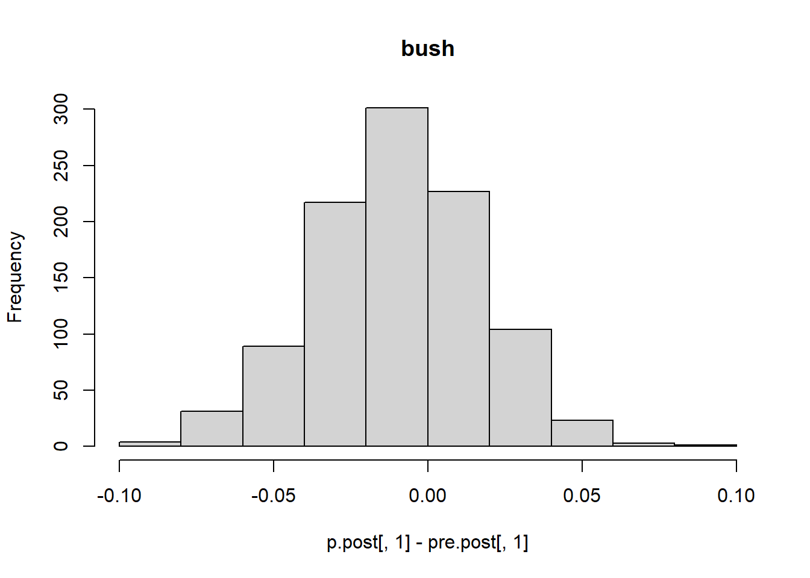
table((p.post[,1]-pre.post[,1])>0) ## 0.355% supported bush post debate.##
## FALSE TRUE
## 623 377 pre.post2<-apply(theta,1, function(x) ddirichlet(x,as.numeric(debate[1,2:4])))
post.post2<-apply(theta,1, function(x) ddirichlet(x,as.numeric(debate[2,2:4])))
plot(theta[,1],pre.post2,col='blue',lty=2)
lines(theta[,1],post.post2,col='red')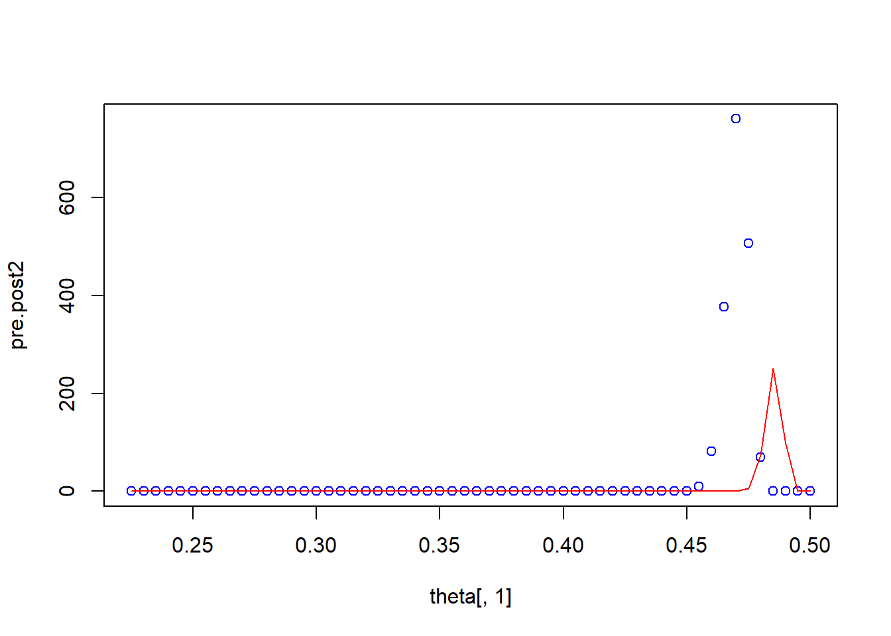
Question 3
we are given two independent normal random variables with unknown variances and unknown true means. - (a) Assume a uniform prior on \((\mu_c, \mu_t, log(\sigma_c),log(\sigma_t))\) find the posterior of \(\mu_c\) and \(\mu_t\).
nc =32
nt= 36
mc = 1.013
sdc = 0.24
mt = 1.173
sdt = 0.24
### unknow true mean/variances we only have sample data.
## we have two unknowns and need to find the joint posterior distribution.
# the marginal posterior of mc follows a t-dist.
mc_range<-c(mc-sdc/sqrt(nc)*qt(0.975,df=nc-1),mc+sdc/sqrt(nc)*qt(0.975,df=nc-1))
mt_range<-c(mt-sdt/sqrt(nt)*qt(0.975,df=nt-1),mt+sdt/sqrt(nt)*qt(0.975,df=nt-1))
## to sample from the posterior we use 3.5 and 3.3 equations
posterior_sample<-function( mc=1, sdc=1, nc=10){
invx2<-((nc-1)*sdc^2)/rchisq(1,nc-1)
post.mu<-rnorm(1,mean=mc,sd=sqrt(invx2/nc))
return(post.mu)
}
post_mc<-sapply(1:1000,function(x) posterior_sample(mc=mc,sdc=sdc,nc=nc))
hist(post_mc,main='posterior marginal control')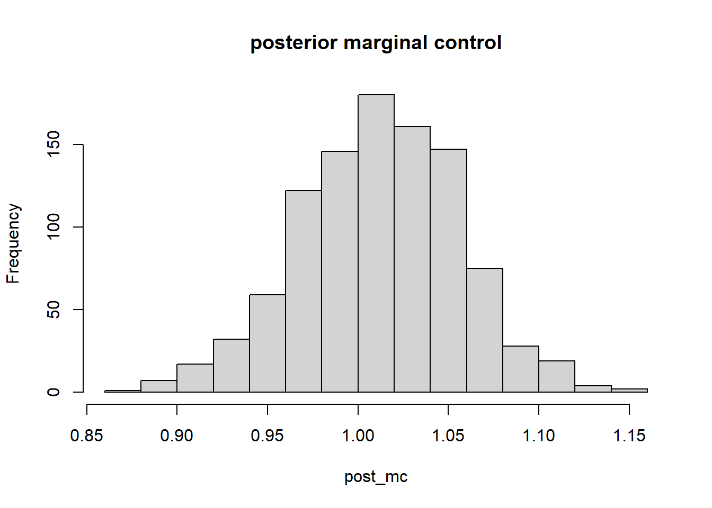
post_mt<-sapply(1:1000,function(x) posterior_sample(mc=mt,sdc=sdt,nc=nt))
hist(post_mt,main='posterior marginal treat')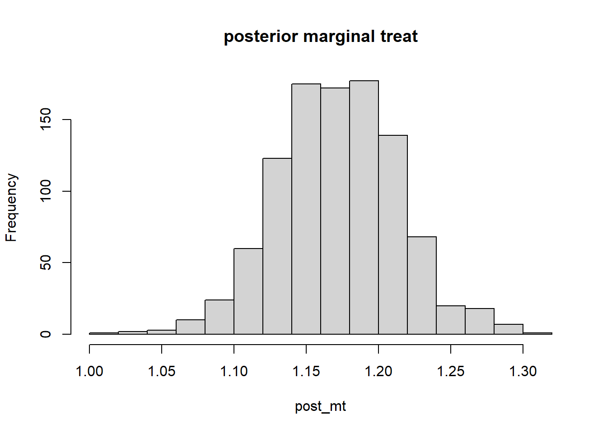
message("95% posterior margin control:", round(mc_range[1],2)," ",round(mc_range[2],2)) ## 95% posterior margin control:0.93 1.1 message("95% posterior margin control:", round(mt_range[1],2)," ",round(mt_range[2],2)) ## 95% posterior margin control:1.09 1.25 quantile(post_mc,c(0.025,0.975))## 2.5% 97.5%
## 0.9289259 1.1003646 quantile(post_mt,c(0.025,0.975))## 2.5% 97.5%
## 1.089285 1.252860- what is \(\mu_t - \mu_c\)
The posterior interval (central) of the differences between 2 independent t-distributoins is 0.16 (0.04, 0.28), which closely matches the posterior simulation interval (0.0338, 0.281). Here since both are independent we use \(X-Y\sim N(\mu_x-\mu_y, sd_x+sd_y)\) as the sampling distribution.
hist(post_mt-post_mc, main = ' Difference between sampled posteriors')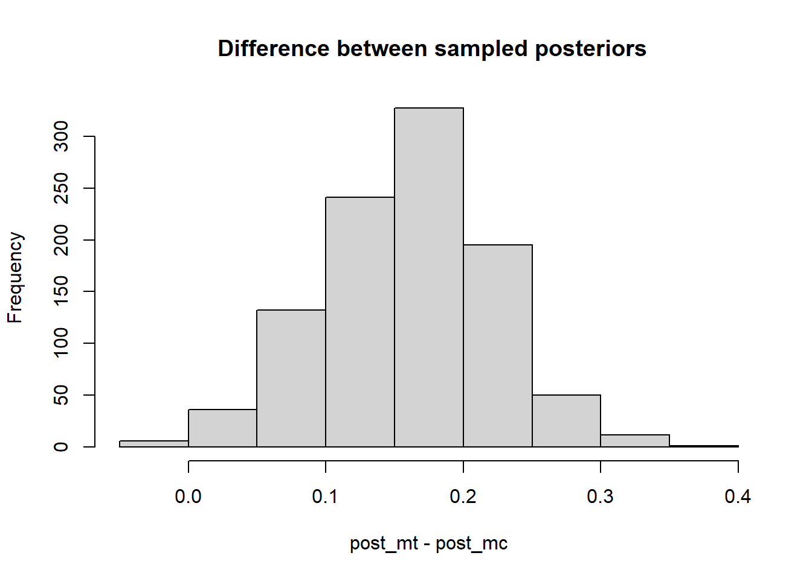
quantile(post_mt-post_mc,c(0.025,0.975))## 2.5% 97.5%
## 0.04272829 0.27060943 ## diff
post_diff<-sapply(1:1000,function(x) posterior_sample(mc=mt-mc,sdc=sdt+sdc,nc=nt+nc))
hist(post_diff, main='simulated difference')
quantile(post_diff,c(0.025,0.975))## 2.5% 97.5%
## 0.03802761 0.27289044 ## theoretical (two independent t distributions)
md = mt-mc
sdd = sdt+sdc
nd = nt+nc
d_range<-c(md-sdd/sqrt(nd)*qt(0.975,df=nd-1),md+sdd/sqrt(nd)*qt(0.975,df=nd-1))
print(d_range)## [1] 0.04381525 0.27618475Question 4 (independent binomial)
so using the multinomial is not correct because we do not have k outcomes, instead we have 2 independent binomial processes (as the question states!) so we modeled the independent likelihoods, which is a product of independent beta distributions.
\(p(p_0,p_1) \propto p(x| p_0,p_1)p(p_0,p_1) = p_0^{38.5}(1-p_0)^{634.5}p_1^{21.5}(1-p_1)^{657.5}\)
p0= seq(0.01,0.99,by=0.01)
p1= seq(0.01,0.99,by=0.01)
post.bin<-function(p0,p1){
pos<- p0^(38.5)*(1-p0)^(634.5)*p1^(21.5)*(1-p1)^(657.5)
return(pos)
}
posts<-NULL
p0p1<- expand.grid(p0, p1)
for(i in 1:nrow(p0p1)){
posts[i]<-post.bin(p0p1[i,"Var1"],p0p1[i,"Var2"])
}
ggplot(p0p1)+
geom_contour(mapping = aes(x = Var1, y = Var2, z = posts), bins = 20)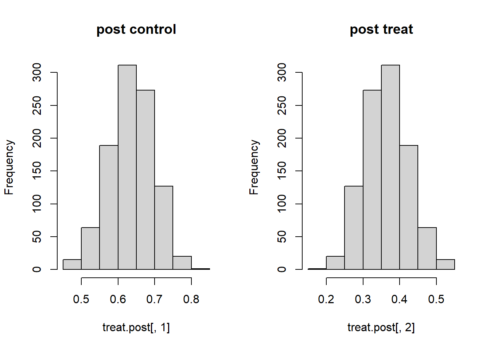
- summarize the odds ratio Note that using a 2x2 table the OR is 0.54 and the independent binomials do approximate well.
b1<-sapply(p0,function(x) pbeta(x,38.5,634.5))
post.control<-rbeta(1000, 38.5,634.5)
post.treat<-rbeta(1000, 21.5,657.5)
or<-(post.treat/(1-post.treat))/(post.control/(1-post.control))
hist(or,main='treatment odds empriical posterior')
summary(or)## Min. 1st Qu. Median Mean 3rd Qu. Max.
## 0.2077 0.4439 0.5374 0.5612 0.6582 1.3765 message("the empricial OR: ", round((22*635)/(39*658),2))## the empricial OR: 0.54- the sensitivity of the noninformative prior density If we use the prior Beta(1,1) as the uniform prior we do see marginal changes to the posterior mean 0.5639.
b1<-sapply(p0,function(x) pbeta(x,39.5,635.5))
post.control<-rbeta(1000, 39.5,635.5)
post.treat<-rbeta(1000, 22.5,658.5)
or<-(post.treat/(1-post.treat))/(post.control/(1-post.control))
hist(or,main='treatment odds empriical posterior')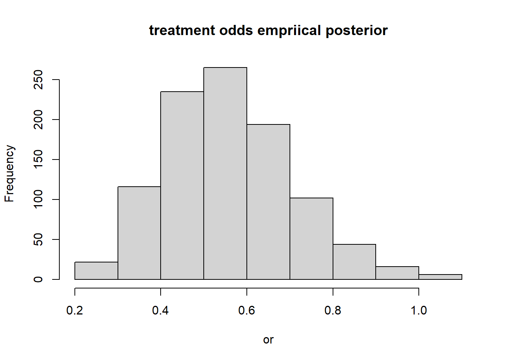
summary(or)## Min. 1st Qu. Median Mean 3rd Qu. Max.
## 0.2105 0.4548 0.5445 0.5640 0.6546 1.2273Question 4 (dirichlet)
- (4a) set up a noninformative prior on \((p_0,p_1)\) and obtain posterior simulations. Assume outcomes are independent and binomially distributed. The posterior for probability of death is Diri(39+1, 22+1, 675,681)
- the dirichlet is the event of rolling a 4 sided die, whereas this problem is rolling independent 2 sided die, however the dirichlet does approximate independnet binomial processes well.
nc= 674
dc= 39
nt = 680
dt = 22
## we have two categories Control ~Bin(p0) and Treat~Bin(p1) we use multinomial
## non-informative prior Diri(a1=1, a2=1)
library(gtools)
## p( p0, p1) = Diri( 1,1) noninfom prior
# p( p0,p1 | y) = Diri( 39+1, 22+1) ## posterior
treat.post<-rdirichlet(1000, c(39+1,22+1, 674+1,680+1))
par(mfrow=c(1,2))
hist(treat.post[,1],main="post control")
hist(treat.post[,2],main='post treat')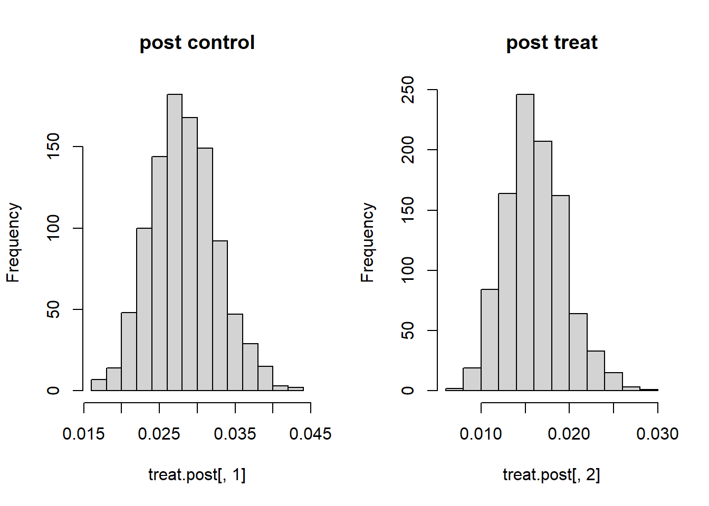
- (4b) The posterior odds has a mean of 0.58 using non-informative prior. Using the empirical odds ratio we see the odds of death is 0.546 comparing treatment to controls.
## data table
dd<-data.frame(none=c(674-39,680-22),outcome=c(39,22),row.names=c('unexp','exp'))
library(epitools)
oddsratio(as.matrix(dd))$measure## NA
## odds ratio with 95% C.I. estimate lower upper
## unexp 1.0000000 NA NA
## exp 0.5463245 0.3147296 0.9249902 ## b
or<-(treat.post[,2]/(1-treat.post[,2]))/(treat.post[,1]/(1-treat.post[,1]))
summary(or)## Min. 1st Qu. Median Mean 3rd Qu. Max.
## 0.2030 0.4674 0.5592 0.5808 0.6711 1.2856 hist(or,main='treatment odds')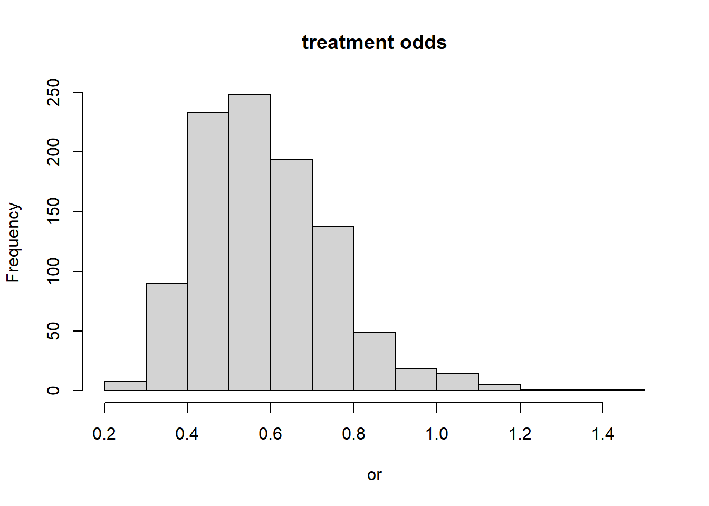
- (4c) showing the improper prior (a=0), the posterior odds is 0.5793 which is very robust and similar to the noninformative. Using the emprical prior that sets the prior hyperparameters to the cohort expected number of deaths \((39/674)*Total = 79\), and \((22/658)*Total = 45\) and a prior cohort size of 677 =(674+680)/2, yields a similar posterior mean of approximately 0.57 for the odds ratio. Hence the posterior is robust to the choice of prior but does not match well with the empirical non-parametric odds.
treat.post<-rdirichlet(1000, c(39,22,674,680))
## b
or<-(treat.post[,2]/(1-treat.post[,2]))/(treat.post[,1]/(1-treat.post[,1]))
hist(or,main='treatment odds ')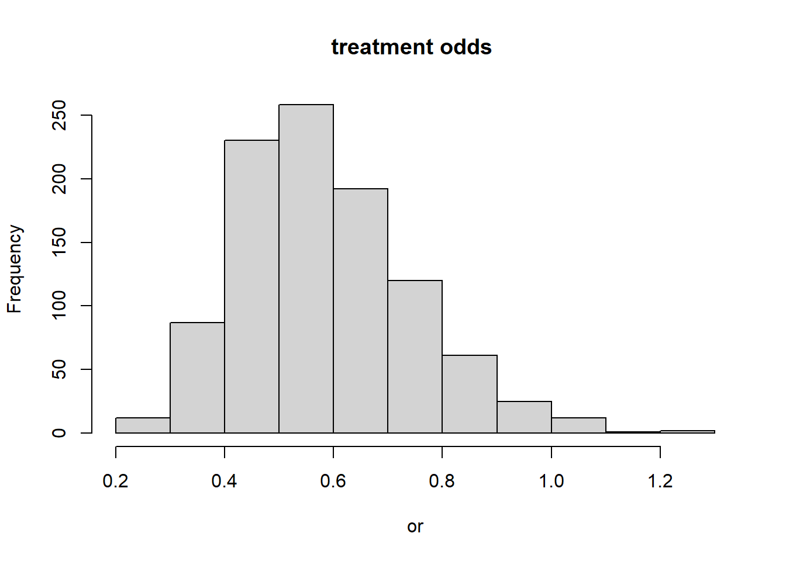
summary(or)## Min. 1st Qu. Median Mean 3rd Qu. Max.
## 0.2172 0.4620 0.5548 0.5725 0.6663 1.2539 ## empirical
# control = (39/674)*1354 = 78.34718
# treat = (22/658)*1354 = 45.27052
treat.post<-rdirichlet(1000, c(39+79,22+46,674+677,680+677))
## b
or<-(treat.post[,2]/(1-treat.post[,2]))/(treat.post[,1]/(1-treat.post[,1]))
hist(or,main='treatment odds empriical posterior')
summary(or)## Min. 1st Qu. Median Mean 3rd Qu. Max.
## 0.3307 0.5078 0.5602 0.5693 0.6246 0.9831Question 5
- Give the posterior distribution of \(\mu, \sigma^2\) obtained by pretending the observations are exact, unrounded, measurements. we choose a prior for \(\theta \sim Gamma(0.1,0.01)\) which has a mean and variance of 10.4 and 1000. Using a Poisson likelihood, the mean is 10.4 and variance 2.2 from the posterior.
obs=c(10,10,12,11,9)
### under the exact model, we can not use a binomial because we do not have a proportion (p0) that we can estimate. we do not have a r.v. for 'successes'.
# we can use the Poisson distribution
## not sure how to use jeffreys prior
a=0.1
b=0.01
pois.post<-rgamma(1000,a+5*mean(obs),b+5)
hist(pois.post,main='count posterior') # post summary mean : 8.8, var= 1.47
summary(pois.post)## Min. 1st Qu. Median Mean 3rd Qu. Max.
## 5.516 9.361 10.290 10.356 11.274 16.963 mean(pois.post)## [1] 10.35623 var(pois.post)## [1] 2.064425 plot(density(pois.post),ylim=c(0,0.4),main='pois posterior')
lines(density(obs),col='red')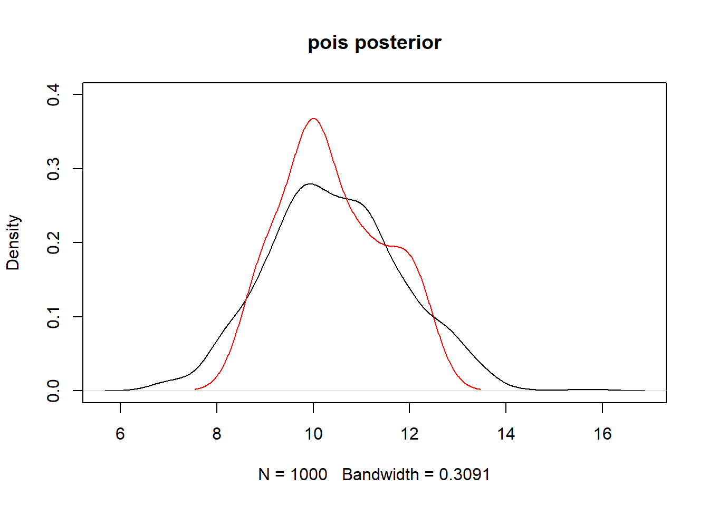
- Give the correct posterior distribution treating the measurements as rounded Using non informative prior for both unknowns, the posterior mean is 10.4 and posterior variance is 0.433
## normal with 2 unknowns.
## joint poisterior
## need the sigma2 | y ~ inv-x2(n-1,s2)
nu = length(obs)-1
s2 = var(obs)
chi2= rchisq(1000, nu)
## inv-chi2 v*s^2/X (Appendix A)
sigma2 = nu*s2/chi2
## posterior prob = p(m | sigma2, y)p(sigma2|y)
## for each variance term draw N( ybar, sd= sqrt(sigma2/n))
y<-sapply(sigma2,function(x) rnorm(1, mean=mean(obs), sd=sqrt(x)/sqrt(5)))
hist(y,main='posterior normal')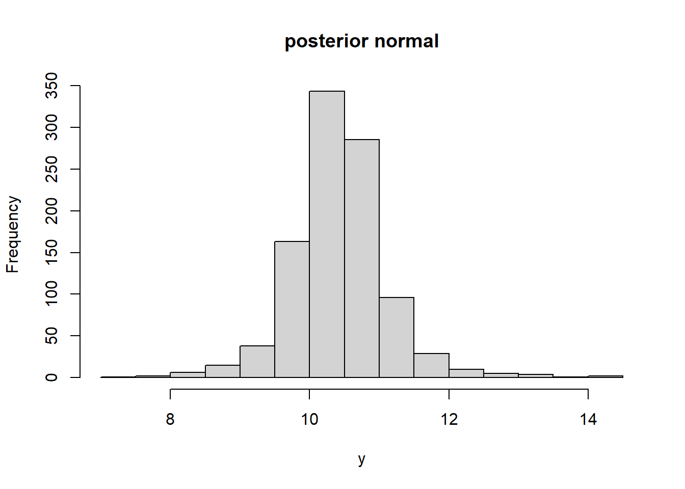
plot(density(y),main='posterior normal density')
lines(density(obs),col='red')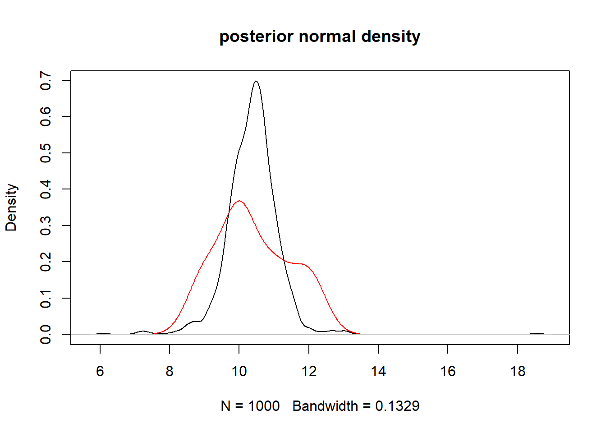 - (c) how do the correct/incorrect differ, compare means/variances
The difference in means is approximately 0, with a variance (residual) of 2.7.
mean( y - pois.post) # 0.002926538## [1] 0.06914787 var( y - pois.post) # 2.7## [1] 2.462133 hist(y-pois.post)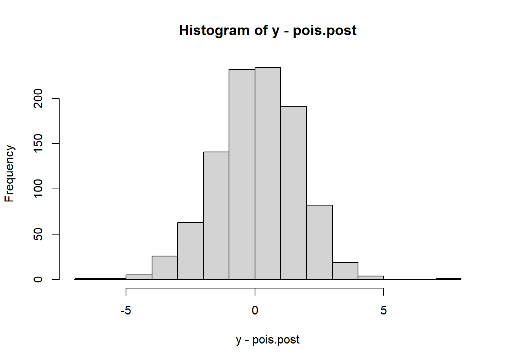
plot(y,pois.post,main="normal vs. pois likelihoods")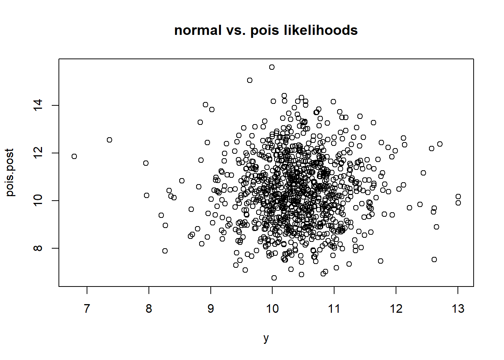
- Let z=(z1,z2,z3,z4,z5) be the original unrounded measurements corresponding to the five observations above. draw simulations of z and compare the posterior \((z1-z2)^2\).
For this we sample from the normal posterior distribution, conditioned on the rounded values to match the observed. For each sample of the posterior, the rounded values are conditioned to match the observed data. The mean difference of (\(z_1-z_2)^2\) is 0.14, with variance of 0.03.
generateObs<-function(obs){
z<-NULL
for(i in 1:5){
zi= sample(y,1)
while( round(zi)!=obs[i]){
zi=sample(y,1)
}
z<-c(z,zi)
}
stopifnot(all(round(z)==obs))
return(z)
}
ERR<-NULL
for(j in 1:1000){
## generate z samples such that round(z) == obs
z<-generateObs(obs)
err<- (z[1]-z[2])^2
ERR<-c(ERR,err)
}
message("mean error:",mean(ERR))## mean error:0.147969012944691 hist(ERR)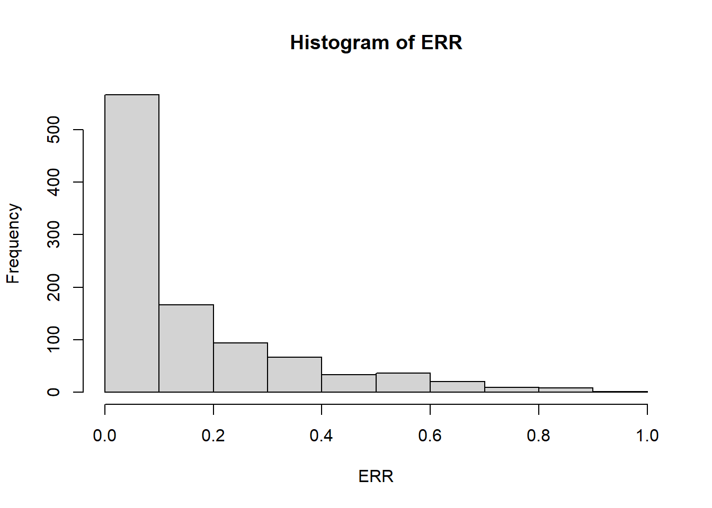 ## Question 6{-} Consider data y1,…,yn modeled as independent Bin(N,\(\theta\)) with both N and \(\theta\) unknown.
First we examine that \(p(\lambda,\theta)\propto 1/\lambda\) described by Raftery (1988). We take the product of a vague prior for \(\lambda\) and the uniform prior for \(\theta\). let \(\theta \sim U[0,1]\) be uniform and use the uniform prior for \(\lambda\) as a vague prior. The motivation here is to use a uniform vague prior on the hyperparameter. Alternatively we can use Jeffreys’ Prior for Pois(\(\lambda) = 1/\sqrt{\lambda}\) where the \(-E(\partial l^2 / \partial \lambda^2) = 1/\lambda\) is known for the Poisson.
\[
\begin{aligned}
p(\lambda,\theta) &\propto (1)1/\lambda\\
&\propto \lambda^{-1}\\
\end{aligned}
\]
- (a) to write the prior N\(\sim P(\lambda)\) as a sampling distribution, but we can let N follow a Gamma, with a Gamma(0,0) vague prior initially and independent of \(\theta\). where \(\theta \sim U(0,1)\) as a uniform probability. Then \(P(N,\theta) = P(N|\theta)p(\theta)\). Note this is an improprer prior.
\[
\begin{aligned}
p(N,\theta) &\propto (1)e^{-\beta*N}N^{\alpha-1}\\
&\propto N^{-1}, \text{for } \alpha,\beta =0\\
\end{aligned}
\]
We can solve for \(p(N,\theta)\) using the prior \(p(\lambda,\theta)\propto \lambda^{-1}\). and \(N\sim Pois(\lambda)\).
\[
\begin{aligned}
p(N,\lambda,\theta) &= p(N|\lambda,\theta)p(\lambda,\theta) \to p(N,\theta) = \int p(N,\lambda,\theta)d\lambda \\
&= \int \frac{(\lambda/N)^Ne^{-\lambda/\theta}}{N!}(\frac{1}{\lambda}) d\lambda\\
&= \frac{1}{N! \theta^N} \int \lambda^{N-1}e^{-\lambda/\theta}d\lambda\\
&= \frac{1}{N! \theta^N}\frac{\Gamma{(N)}}{1/\theta^N} = 1/N\\
\end{aligned}
\]
So we can let N follow vague prior from the Gamma(0,0) distribution, or call N a uniform on (0,N) and independent of \(\lambda\) to derive p(N,\(\theta)\).
- we need to find the marginal posterior of N, first we find the joint posterior which follows a Beta distribution
\[ \begin{aligned} p(\theta,N | y) &= p(y | N,\theta)p(N,\theta) \\ &\propto \theta^{\sum y_i} (1-\theta)^{nN-\sum y_i}(1/N)\\ &\propto (1/N)Beta(\sum y_i+1, nN-\sum y_i +1)\\ \end{aligned} \] Then we integrate with respect to \(\theta\) to find the marginal posterior, where the integrand is the kernel for the Beta distribution, and we have the beta coefficient that remains in the marginal equation.
\[ \begin{aligned} p(N| y) &= \int (1/N) \prod {N \choose y_i} \theta^{S}(1-\theta)^{nN-S}d\theta, S=\sum y_i \\ & = (1/N) \prod {N \choose y_i} \int \theta^{S}(1-\theta)^{nN-S}d\theta \\ & = (1/N) \prod {N \choose y_i} Beta(S+1, nN-S+1)\\ \end{aligned} \] The maximum probability is 122 trials with the highest marginal,
x<-c(53,57,66,67,72)
totalN=seq(max(x),1000)
marginal.post<-function(N,x){
n=length(x)
S=sum(x)
# choose on the log scale
a<-sum( lchoose(N,x))
b = (-1)*log(N)
# b=0
c = lbeta( S+1, n*N- S +1)
#rez<-(a*b)/c
rez<-a+b+c
return(exp(rez))
} ## problems here
## can we condition we can derive the analytic form of the joint posterior.
##
marg.n<-sapply(totalN,function(y) marginal.post(y,x))
## we use a grid approach to theta
totalN[which.max(exp(marg.n))]## [1] 122 ##
norm.n<-marg.n/sum(marg.n)
plot(totalN,norm.n)
abline(v=totalN[which.max(exp(marg.n))])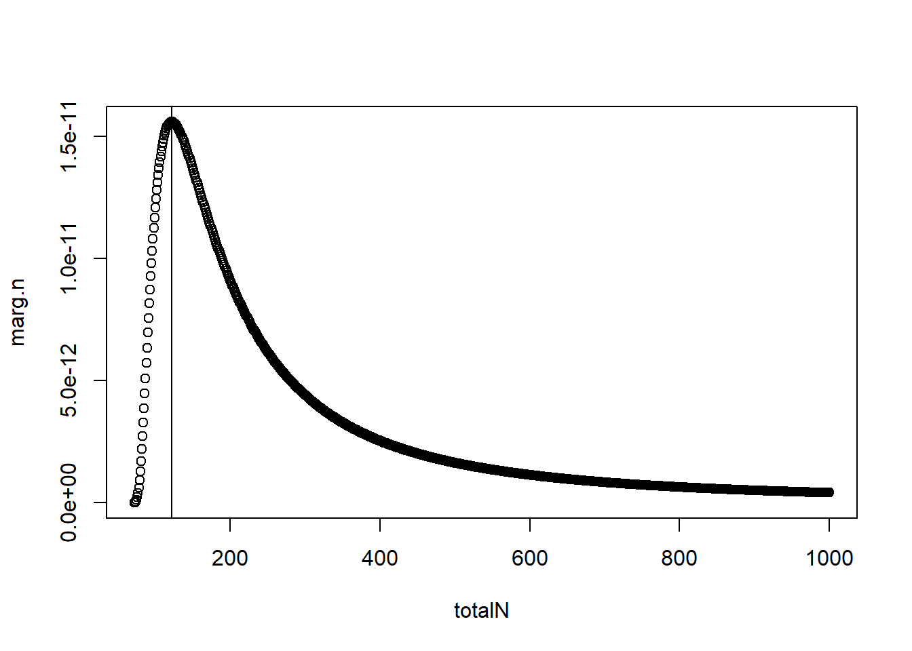 The joint posterior distribution given the data and N=122 (which was maximal marginal) has the maximum theta = 0.52.
theta=seq(0.01,0.99,by=0.01)
posterior.joint<-dbeta(theta, sum(x)+1, 5*122-sum(x)+1)/122
norm.post<-posterior.joint/sum(posterior.joint)
plot(theta,norm.post, main='joint posterior N=122')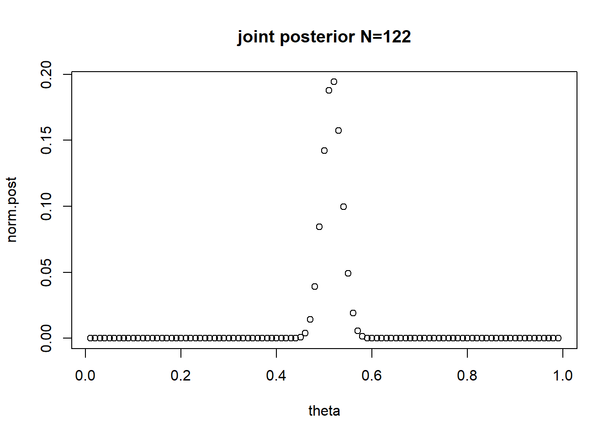
theta[which.max(norm.post)]## [1] 0.52- (b ii) and for P\((N>100) \approx 0.95\). We had to use the normalized marginal posterior distribution to correctly compute the probability.
1-sum(norm.n[totalN<=100])## [1] 0.9518952- the poisson distribution using \(\mu\) for N only gives the probability for N as a fixed realization, however we want to study the uncertainity over all possible N values.
Question 7
for 2 independent poisson distributions for x and y with \(\lambda_1,\lambda_2\). And the outcome \(X\) has a binomial distribution with N=x+y and unknown p. show that the two models have the same likelihood.
We need to solve for the conditional probability of X given X+Y using the Poisson likelihoods. Here if you input the Poisson likelihoods, and use X+Y \(\sim Poi(\lambda_1+\lambda_2)\) this returns to a Binomial(n, \(\lambda_1/(\lambda_1+\lambda_2))\). \[ \begin{aligned} p(X =k| X+Y=n) &= \frac{P(X+Y=n | X=k)P(X=k)}{P(X+Y=n)} \\ &= \frac{P(Y=n-k)P(X=k)}{P(X+Y=n)} \\ \end{aligned} \]
question 8
notes: dirichlet distribution? - (a) For a given block there are only two outcomes, bicycles, and other vehicles. So a binomial distribution is appropriate (2 outcomes only). We model y and binomial \((N_y,\theta_y)\) independent of z\(\sim Binomial(N_z,\theta_z)\).
We assume \(\theta_y,\theta_z\) are independent, so the posteriors are independent Beta models. \[ \begin{aligned} p(\theta_y,\theta_z| y,z) &= p(\theta_y | y)p(\theta_z|z) \\ &= Beta(\theta_y | 1/2 +\sum y_i, 1/2+N_y-\sum y_i)*Beta(\theta_z | 1/2 +\sum z_i, 1/2+N_z-\sum z_i)\\ \end{aligned} \] - (b) the prior uses Jeffreys’ Beta(1/2,1/2) for each parameter independently.
rez.lane.bike<-c(16,9,10,13,19,20,18,17,35,55)
rez.lane.other<-c(58,90,48,57,103,57,86,112,273,64)
NY<-(rez.lane.bike+rez.lane.other)
rez.lane.p<-rez.lane.bike/(rez.lane.bike+rez.lane.other)
rez.nolane.bike<-c(12,1,2,4,9,7,9,8)
rez.nolane.other<-c(113,18,14,44,208,67,29,154)
NZ<-(rez.nolane.bike+rez.nolane.other)
rez.nolane.p<-rez.nolane.bike/(rez.nolane.bike+rez.nolane.other)- we determine the posterior distribution using the beta distribution by sampline independently. Using a grid a pproach we see the contour map centered around 0.18 and 0.09 which is equivalent to the MLEs.
bike.post<-rbeta(1000, (1/2 + sum(rez.lane.bike)), (1/2+sum(rez.lane.other)))
bike.post2<-rbeta(1000, (1/2 + sum(rez.nolane.bike)), (1/2+sum(rez.nolane.other)))
p0= seq(0.01,0.99,by=0.01)
p1= seq(0.01,0.99,by=0.01)
post.bike<-function(p0,p1,y,z,ny,nz){
pos<- p0^(sum(y))*(1-p0)^(sum(ny)-sum(y))*p1^(sum(z))*(1-p1)^(sum(nz)-sum(z))*dbeta(p0,1/2,1/2)*dbeta(p1,1/2,1/2)
return(pos)
}
posts<-NULL
p0p1<- expand.grid(p0, p1)
for(i in 1:nrow(p0p1)){
posts[i]<-post.bike(p0p1[i,"Var1"],p0p1[i,"Var2"], rez.lane.bike,rez.nolane.bike, NY,NZ)
}
library(ggplot2)
ggplot(p0p1)+
geom_contour(mapping = aes(x = Var1, y = Var2, z = posts), bins = 20)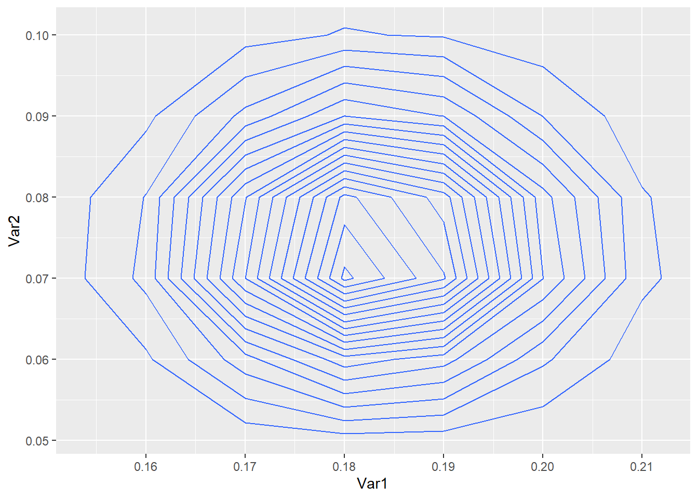
- expected difference and the posterior distribution we find the difference in the posterior distribution which is approximately 0.11 higher proportions in bike routes.
hist(bike.post-bike.post2)
abline(v=mean(bike.post)-mean(bike.post2))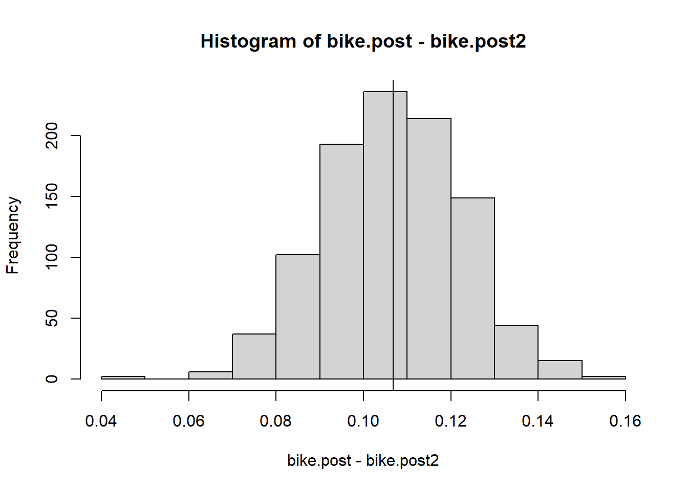
meany =(1/2 + sum(rez.lane.bike))/(1/2 + sum(rez.lane.bike)+(1/2+sum(rez.lane.other))) ## theoretical mean
meanz =(1/2 + sum(rez.nolane.bike))/(1/2 + sum(rez.nolane.bike)+(1/2+sum(rez.nolane.other))) ## theoretical meanquestion 9
We need to derive the posterior of \(p(\mu^2, \sigma^2 | y)\). \(p(\mu,\sigma^2 | y) = p(y|\mu,\sigma^2)*p(\mu , \sigma^2)\)
\[ \begin{aligned} p(\mu, \sigma^2 |y)&=\sigma^{-1}(\sigma^2)^{-(\nu_0/2 +1)}exp(-1/2\sigma^2 (\nu_0\sigma_0^2 + k_0(\mu-\mu_0)^2)) \times (\sigma^2)^{-n/2}exp(-1/2\sigma^2 ((n-1)s^2 + n(\mu-\bar{y})^2))\\ &= \sigma^{-1}(\sigma^2)^{-((\nu_0+n)/2 +1)} exp(-1/2\sigma^2( \nu_0\sigma_0^2 +(n-1)s^2 +\mu^2(k_0+n) +\mu(-2\mu_0k_0 -2\bar{y}n) + \mu_0^2k_0 +n\bar{y}^2)\\ \end{aligned} \] Where we factor the inside using \(\mu_n = k_0\mu_0/(k_0+n) +n\bar{y}/(k_0+n)\) \[ \begin{aligned} &\to \mu^2(k_0+n) +\mu(-2\mu_0k_0 -2\bar{y}n) + \mu_0^2k_0 +n\bar{y}^2 \\ &= (k_0+n)(\mu^2 - 2\mu( \mu_0k_0/(k_0+n) +\bar{y}n/(k_0+n)) + \mu_0^2k_0/(k_0+n) + n\bar{y}^2/(k_0+n)) \\ &= (k_0+n)(\mu^2 - 2\mu( k_0\mu_0/(k_0+n) +n\bar{y}/(k_0+n)) + \frac{\mu_0^2k_0(k_0+n)}{(k_0+n)^2} + \frac{n\bar{y}^2(k_0+n)}{(k_0+n)^2} +\frac{2k_0\mu_0n\bar{y}}{(k_0+n)^2} -\frac{2k_0\mu_0n\bar{y}}{(k_0+n)^2})\\ &= (k_0+n)(\mu^2 - 2\mu( k_0\mu_0/(k_0+n) +n\bar{y}/(k_0+n)) + \frac{\mu_0^2k_0^2}{(k_0+n)^2} +\frac{\mu_0^2k_0*n}{(k_0+n)^2}+ \frac{n^2\bar{y}^2}{(k_0+n)^2} + \frac{n\bar{y}^2k_0}{(k_0+n)^2}+\frac{2k_0\mu_0n\bar{y}}{(k_0+n)^2} -\frac{2k_0\mu_0n\bar{y}}{(k_0+n)^2}) \\ &= (k_0+n)(\mu^2 + -2\mu\mu_n +\mu_n^2 +\frac{\mu_0^2k_0*n}{(k_0+n)^2}+ \frac{n\bar{y}^2k_0}{(k_0+n)^2} -\frac{2k_0\mu_0n\bar{y}}{(k_0+n)^2})\\ &= (k_0+n)( (\mu-\mu_n)^2 + (k_0*n)/(k_0+n)^2( \mu_0^2+\bar{y}^2 -2\mu_0\bar{y}) \\ &= (k_0+n)( (\mu-\mu_n)^2 + (k_0*n)/(k_0+n)( \mu_0-\bar{y})^2\\ \end{aligned} \]
putting the factorization into the posterior and derived the formula for each updated term.
here we see that \(\sigma^2_n ,\mu_n\) are sufficient statistics for \(\mu,\sigma^2\) by the factorization theorem because the posterior depends on parameters only through the summary statistics.
\[ \begin{aligned} p(\mu, \sigma^2 |y)&=\sigma^{-1}(\sigma^2)^{-((\nu_0+n)/2 +1)} exp(-1/2\sigma^2+ ( \nu_0\sigma_0^2 +(n-1)s^2 +(k_0+n)( (\mu-\mu_n)^2 + (k_0*n)/(k_0+n)( \mu_0-\bar{y})^2)\\ &= \sigma^{-1}(\sigma^2)^{-((\nu_0+n)/2 +1)} exp(-1/2\sigma^2+ ( \nu_n\sigma_n^2 +(k_n)( (\mu-\mu_n)^2 )\\ & = \sigma^{-1}(\sigma^2)^{-((\nu_n)/2 +1)} exp(-1/2\sigma^2 ( \nu_n\sigma_n^2 +(k_n)( (\mu-\mu_n)^2 )\\ \end{aligned} \] # Question 10{-} To show the F-distribution we prove it directly, using a change of variables. Although there is a theorem (definition) that for \(X\sim N(a,b)\) and \(Y\sim N(c,d)\) then F= \(S_X^2/\sigma^2_X / (S_Y^2 / \sigma_Y^2)\) follows an F-distribution.
For \((n-1)S^2/\sigma^2 \sim X_{n-1}^2\) we let \(U \sim \chi_p^2, V\sim \chi_q^2\). We let \(Z = (U/p)/(V/q)\) and \(W=V/q\).
\[ J= \begin{bmatrix} \partial u/\partial z & \partial u/\partial w \\ \partial v/\partial z & \partial v/\partial w \end{bmatrix} = \begin{bmatrix} q & 0 \\ zp& pw \\ \end{bmatrix} = qpw \]
For V = wq, and U = zpw. Note that after combining terms we have the Gamma kernel with \(\alpha = p+q/2 -1\) and \(\beta= 1/2(pz+q)\) which is the F-distribution.
\[
\begin{aligned}
f(z,w)&= f(u)f(v)|J| \\
&= \frac{1}{\Gamma(p/2)2^{p/2}}(pzw)^{p/2-1}e^{-pzw/2}/frac{1}{\Gamma(q/2)2^{q/2}}(wq)^{q/2-1}e^{-wq/2}|pwq| \\
&=\frac{z^{p/2-1}}{\Gamma(p/2)2^{p+q/2}\Gamma(q/2)}(p)^{p/2}q^{q/2}w^{(p+q/2 -1)} e^{-w/2(pz+q/2)} \\
& = \frac{z^{p/2-1}}{\Gamma(p/2)2^{p+q/2}\Gamma(q/2)}(p)^{p/2}q^{q/2}[\frac{\Gamma(p+q/2)}{(1/2(pz+q))^{p+q/2}}]\\
&= \frac{z^{p/2-1}}{\Gamma(p/2)\Gamma(q/2)}(p)^{p/2}q^{q/2}[\frac{\Gamma(p+q/2)}{(q^{p+q/2(pz/q+1))^{p+q/2}}}]\\
&=\frac{z^{p/2-1}\Gamma(p+q/2)}{\Gamma(p/2)\Gamma(q/2)}(p/q)^{p/2}\frac{1}{(pz/q+1)^{p+q/2}} \\
\end{aligned}
\]
We showed that for U, V as Chi-square variables, their ratio is the F-distribution, In order to show that the posterior distribution F= \(S_X^2/\sigma^2_X / (S_Y^2 / \sigma_Y^2)\) is F. The posterior \(Y \sim \sigma^2 | y \sim Inv-\chi^2(\nu, \sigma^2)\). where Y =\(\frac{(n-1)S^2}{\chi_{n-1}^2}\). So The inverse chi-square distribution can be re-arranged to follow a Chi-square. Then the variable Z in terms of Chi-square variables can be expressed using Inv-Chisquare variables.
Question 11
the model is defined as \(p(\alpha,\beta,y,n,x) \propto p(\alpha,\beta)\prod_{i=1}^{4}p(y_i | \alpha,\beta,n_i,x_i)\), where \((\alpha,\beta)\) follows a joint normal prior with \(\alpha \sim N(0, 2^2)\) and \(\beta \sim N(10,10^2)\) and corr(\(\alpha,\beta) = 0.5\).
- we repeat the computations of this data
- and overlay the contour with the posterior distribution
library(mvtnorm)
library(magrittr)
library(dplyr)
library(ggplot2)
assay<-data.frame(x=c(-0.86,-0.30,-0.05,0.73), n=c(5,5,5,5), y=c(0,1,3,5))
## the point a,b by MLE is (0.8,7.7) so we grid around these solution.
a0= seq(-5,10,by=0.1)
b1= seq(-10,40,by=0.1)
a0b1<- expand.grid(a0, b1)
logit<-function(theta){
return( log(theta/(1-theta)))
}
inv.logit<-function(theta){
return( (exp(theta)/(1+exp(theta))) )
}
## alpha, beta come from multivariate normal.
## \prod_(i=1)^5 p(y|theta) ~ \theta^y (1-theta)^n-y ## kth dose.
### logit(theta) = alpha+ beta*x
logit.likelihood<-function(alpha,beta,x,y,n){
theta_approx<- alpha+beta*x
bin.like<-(inv.logit(theta_approx))^y*(1-inv.logit(theta_approx))^(n-y)
return(bin.like)
}
## the alpha,beta stem from the grid, and we return the probability mass from the prior.
joint.prior<-function(alpha,beta){
cormat<-matrix(c(4,0.5*2*10,0.5*2*10,100),2)
return(dmvnorm(c(alpha,beta), mean=c(0,10),sigma=cormat))
}
posterior_density<-function(alpha,beta,assay){
joint_density<-joint.prior(alpha,beta)
probs<-NULL
for(k in 1:nrow(assay)){
p<-logit.likelihood(alpha,beta,assay$x[k],assay$y[k],assay$n[k])
probs<-c(probs,p)
}
totalLikelihood<-prod(probs)
return( joint_density*totalLikelihood)
}
posts<-NULL
## unnormalized posterior over grid which covers (a,b)
for(i in 1:nrow(a0b1)){
posts[i]<-posterior_density(a0b1[i,"Var1"],a0b1[i,"Var2"],assay)
}
posts_norm<-posts/sum(posts)
a0b1$joint.prob<-posts_norm
## grid sampling procedure
marginal.post_a<- a0b1%>%group_by(Var1)%>%summarise(p=sum(joint.prob))%>%data.frame
A<-B<-NULL
for(s in 1:1000){
a_s<-sample(marginal.post_a$Var1,1,prob=marginal.post_a$p)
p.a_s<-marginal.post_a[which(marginal.post_a$Var1==a_s),'p']
marginal.post_b<-a0b1[which(a0b1$Var1==a_s),]
marginal.post_b$cond.prob<-marginal.post_b$joint.prob/p.a_s
b_s<-sample(marginal.post_b$Var2,1,prob=marginal.post_b$cond.prob)
A<-c(A,a_s)
B<-c(B,b_s)
}
### need to add a random jitter around each point.
A<-A+runif(length(A),min=0,max=0.1)
B<-B+runif(length(B),min=0,max=0.1)
ab.post<-data.frame(A=A,B=B)
ggplot(a0b1)+
geom_contour(mapping = aes(x = Var1, y = Var2, z = posts), bins = 20)+
geom_point(data = ab.post, aes(x = A, y = B), pch = 21)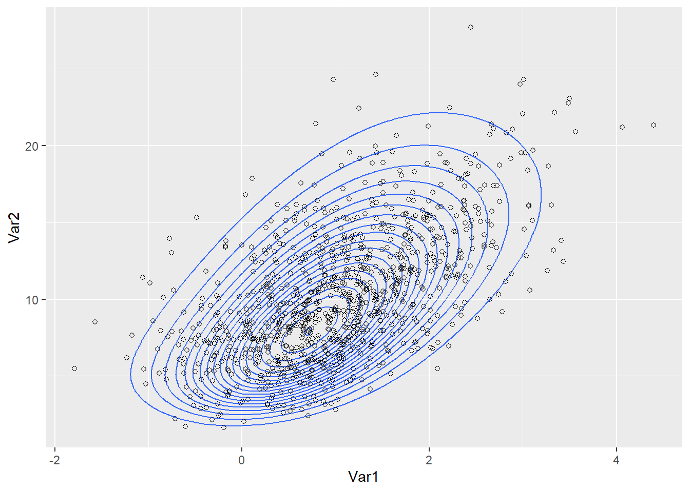
- (bii) the LD50 is summarized ensuring the B>0 for a positive dose-response.
hist(-A/B, main='LD50')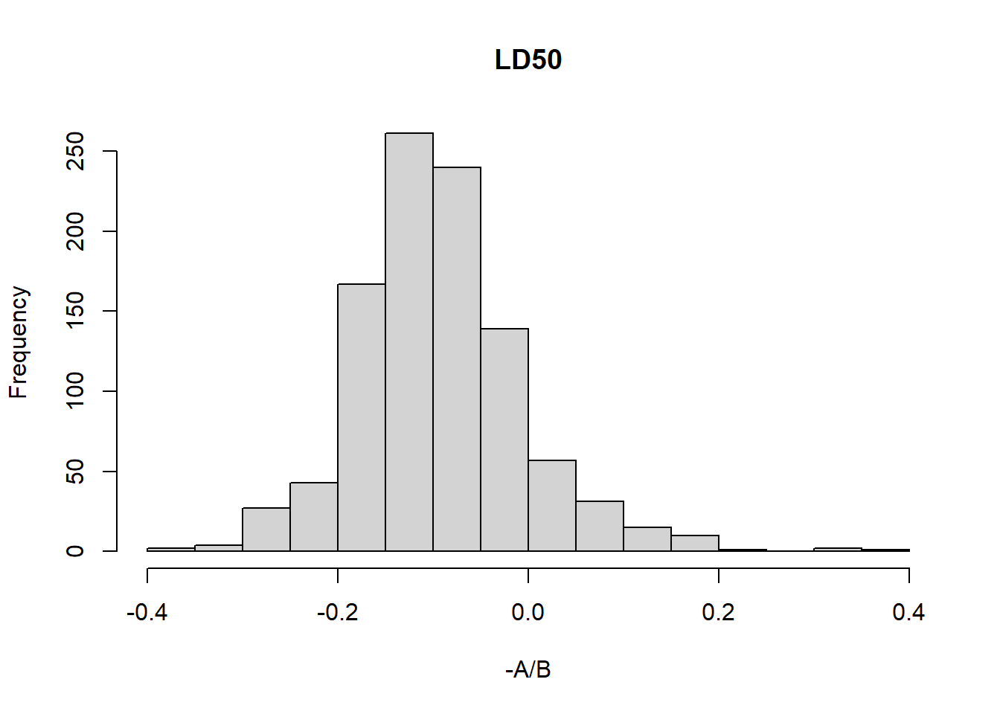
## probability of dose-response being responsive to the dose. negative means dose-response has negative response and is harmful.
table(B>0)##
## TRUE
## 1000